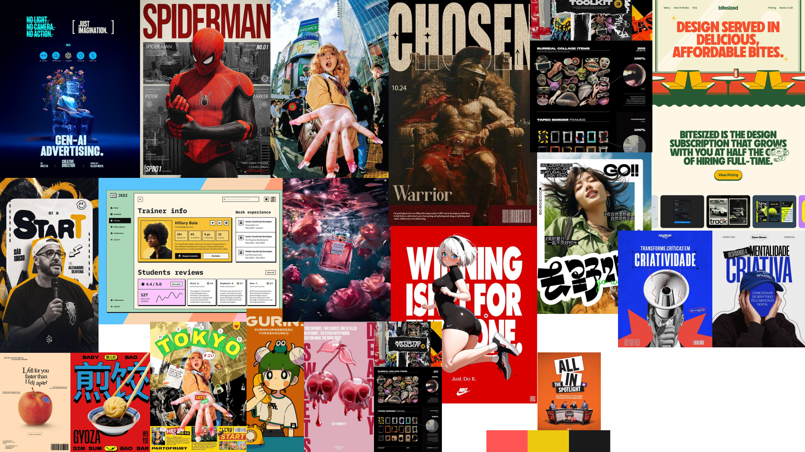

Standalone symbol / approved geometry
02 / Brand Presentation
Build what keeps coming back.
A visual language for practical agent systems: rigorous underneath, direct on the surface, and honest about the parts that still break.
01 / Statement
One message. One deliberate hit.
Campaign languageRyan Brosas / Agent systems builder
Systems before spectacle.
02 / Mark
A symbol that works like a stamp.
Verified sourceRyan
Brosas
Agent Systems Builder
Plain typographic lockup only. No invented company name or redrawn wordmark glyph.
03 / Color
Four colors. Fixed jobs.
Source sampledNear-white
#FEFEFE / reading canvasCharcoal
#1A1A1A / structureCoral
#FF5555 / repeatable accentSignal yellow
#ECC90F / scarce signal
04 / Type
Energy without condensed type.
PostureDisplay behavior
WHAT
BROKE?
Readable explanation
The useful part is usually behind the demo.
Where the context came from. What checked the output. How the next system learned what happened. And whether the failure path still depends on Ryan being awake.
Normal-width sans, moderate weight, short paragraphs, concrete questions.
05 / Reference
Contained inspiration. Original execution.
Reference only
01
Scale contrast
One oversized element against compact utility details.
02
Strong crop
Frame the evidence decisively without hiding its subject.
03
Type tension
Let type and image carry different weights and rhythms.
04
Mixed rhythm
Alternate dense evidence with calm, readable explanation.
06 / Applications
Show the work, including the bugs.
Media files openOpen / Real build evidence needed
Agent coding system
Best evidence: workflow map, terminal output, agent handoff, and one failure that changed the architecture.
Open / Real build evidence needed
Second Brain Studio
Best evidence: information flow, retrieval context, decision trail, and how updates reach downstream systems.
Open / Real build evidence needed
Agent usage / cost tracker
Best evidence: actual interface screenshot, cost trace, anomaly check, and the question it helped answer.
Client track / Discovery
Recurring-work map
Identify what repeatedly returns to the founder before choosing an implementation.
Client track / System
Automation experiment
Show the smallest reliable test, the checks around it, and why it did or did not need AI.
Client track / Handoff
Operational guide
Document context, owners, checks, failure paths, and what still requires human judgment.
Open
Attach 1-2 owned assets per project category.
Pixel art or anime-influenced texture can support the story later. No glowing robot brains, neon AI heads, or generic humanoid robots.
Closing signature / Approved campaign line
Building systems so everything doesn't need you.